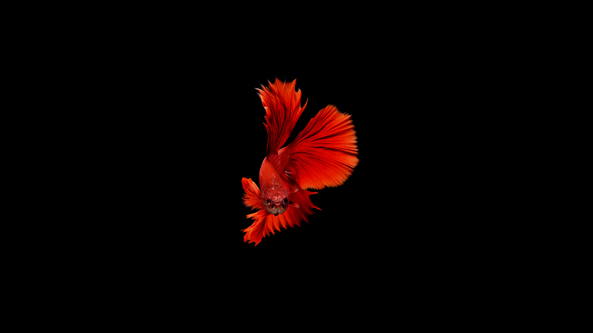
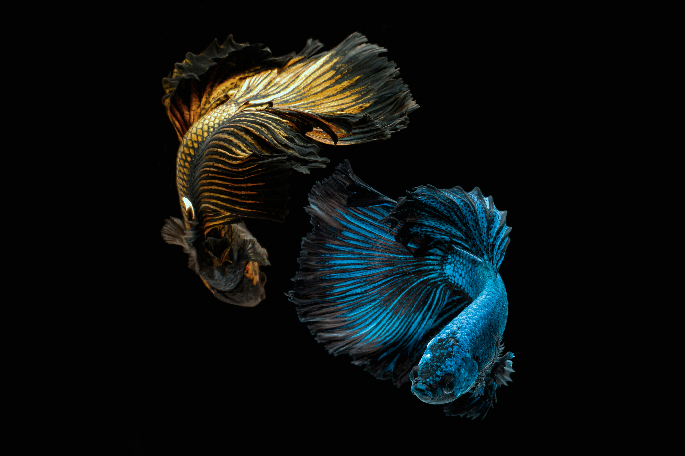
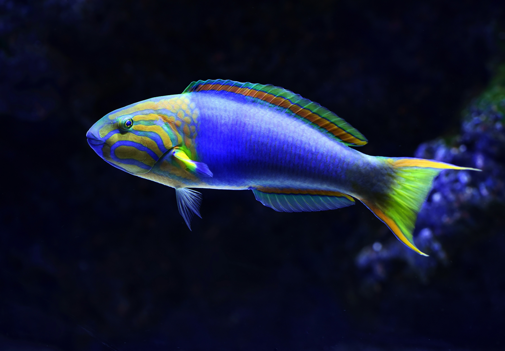

In every fry born lies the reward of dedication, meticulous care, and a deep passion for aquatic life
At DE'OCEAN, breeding is approached as high art and science combined. Every single fish strain is curated through generations of careful selection, resulting in striking color morphs and vibrant, resilient genetics unavailable in standard commercial markets.
We reject mass production in favor of meticulous generational isolation, locking in vivid chromatic patterns and majestic structural anatomy.

Our custom aquatic setups mimic natural biospheres down to the microscopic level. By precisely calibrating parameters, we guarantee optimal health, unmatched pigment brilliance, and extraordinary vitality for every specimen.
From obsidian-scaled Bettas to pristine Masterline Discus, each specimen develops in an ecosystem engineered specifically for absolute biological perfection.

To preserve the absolute highest standards of quality and ensure the well-being of our live art, DE'OCEAN operates entirely on an exclusive acquisition framework.
Collectors curate mixed-breed orders through our interactive queue, benefiting from automated volume tier discounts, direct administrator review, and secure, tracked transport planning.
